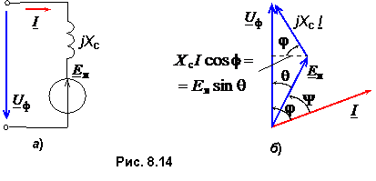

8.5.3.Электромагнитный момент двигателя
В установившемся режиме момент сопротивления Мc на валу машины будет уравновешен вращающим электромагнитным моментом, развиваемым двигателем, т.е. Мэм = Мc.

Для вывода выражения электромагнитного момента СД воспользуемся схемой замещения одной фазы обмотки якоря (рис. 8.14а). Активное сопротивление обмотки якоря Rя мало, поэтому в схеме замещения оставляют только ее индуктивное сопротивление jXc. Так как синхронный двигатель является приёмником электрической энергии, то его противo-ЭДС Eя направлена встречно напряжению Uф. Запишем уравнение электрического состояния фазы обмотки СД:
Uф = Eя + jXcI. (8.5)
Этому уравнению соответствует векторная диаграмма, изображенная на рис. 8.14б. Вектор ЭДС Eя, который связывают с положением полюсов N' – S' ротора, отстаёт на угол Θ от вектора фазного напряжения Uф сети, с которым связано положение полюсов результирующего магнитного поля N – S статора машины.
Электромагнитная мощность, потребляемая двигателем из сети,
Pэм = 3UфIcosφ. (8.6)
Электромагнитный момент СД
Электромагнитный момент СД
Мэм = Рэм/ω0 = 3UфIcosφ/ω0 = 3UфEяsinΘ/(ω0Xc),
где ω0 = 2πn0 / 60; XcIcosφ = EяsinΘ, откуда Icosφ = EяsinΘ/Xc
(рис. 8.14б).
Итак, электромагнитный момент синхронного двигателя
Мэм = МmaxsinΘ, (8.7)
где Мmax = 3UфEя/(ω0Xс).